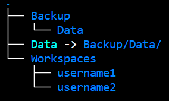

this time will be the last where you are asked your password when logging in from your computer.
Home on the cluster
Every time you log in, you will find yourself into your private home folder. This is denoted by ~ or /home/username/. Your prompt will show something like this:
[samuele@fe-open-02 ~]
which follows the format
[username@node current_folder]
See the content of the current folder with
ls
or to see more details
ls-lh
Warning
do not fill up your home with data. It has a limited amount of storage.
Access from VSCode
An IDE (Integrated Development Environment) is an interface from which you can edit files, use the terminal, write code. You might now IDEs such as Rstudio (very dedicated to R and python) and jupyterlab (for basically any language).
A good recommendation to interact with the cluster is the IDE VSCode. It has a very practical interface and many plugins that can make your life very easy once you get confident with it.
Download VSCode and open it. Go to the plugin tab (red circle)
Search for remote development. Open the plugin (red circle) and install
When done, click on the remote symbol on the bottom-left corner (red circle),
choose Connect current window to host then Add new SSH host, and type:
ssh username@login.genome.au.dk
If asked, select the file .ssh/config
After some waiting for the first installation, you are logged in, and can do it again whenever you open VScode.
Click on the browser tab (red circle), then Open Folder and choose your home by typing /home/username. You will see everything in your home in the browser on the left
It can be useful to have other folders at hand, such as projects.
Go to File–> Add folder to workspace and type a path of the type
/home/username/project
to see the project folder listed in the browser. You should see something like
Also, why not having a terminal as well, without jumping beteeen windows all the time? We still need it to run jobs, create environments and so on.
On the top menu, go to Terminal –> New Terminal (it might ask which is the current folder, if you added folders to the workspace).
Note that the terminal is also logged into GenomeDK
Project management
Creation
You need a project from which you can run your programs. Request a project with the command
gdk-project-request-g<project_name>
This creates a folder with the desired name. You should be able to go into that folder:
cd<project_name>
You can see how many resources your projects are using with
gdk-project-usage
Users management
Only the creator (owner) can see the project folder. You can add an user
If your project has many users, a good structure can be

mkdir-p Backup/Data Workspaces/username1 Workspaces/username2ln-s Backup/Data/ Data
Each user can go in its folder inside the project and run the script to populate the folders
cd Workspaces/username1wget https://github.com/hds-sandbox/GDKworkshops/blob/be7315365c152ecd75e94c1f56e1578062c2c096/Scripts/populate_project.shchmod +x populate_project.sh./populate_project.sh
Package/Environment management
Virtual environments
Each project needs specific software versions dependent on each other for reproducibility - without interferring with other projects.
Definition
A virtual environment keeps project-specific softwares and their dependencies separated
A package manager is a software that can retrieve, download, install, upgrade packages easily and reliably
Conda
Conda is both a virtual environment and a package manager.
Environment files are very useful when you want to share environments with others.
Good practice: You want to install a lot of packages in an environment? Clone it first!
If you break something, you still have the old copy.
mamba create -p ./test_1_cloned --clone test_1
Running a Job
What is a job on a HPC
A computational task executed on requested HPC resources (computing nodes), which are handled by the queueing system (SLURM).
The command gnodes will tell you if there is heavy usage across the computing nodes
Usage of computing nodes. Each node has a name (e.g. cn-1001). The symbols for each node mean running a program (0), assigned to an user (_) and available (.)
If you want to venture more into checking the queueing status, Moi has done a great interactive script in R Shiny for that.
Front-end nodes are limited in memory and power, and should only be for basic operations such as
starting a new project
small folders and files management
small software installations
and in general you should not use them to run computations. This might slow down other users.
Interactive jobs
Useful to run a non-repetitive task interactively
Examples:
splitting by chromosome that one bam file you just got
open python/R and do some statistics
compress/decompress multiple files, maybe in parallel
Once you exit from the job, anything running into it will stop.
The queueing system makes you wait based on the resources you ask and how busy the nodes are. When you get assigned a node, the resources are available. The node name is shown in the prompt.
[<username>@s21n32 ~]$
Batch script (sbatch)
Useful to run a program non-interactively, usually for longer time than a short interaction. A batch script contains
the desired resources
the sequence of commands to be executed
and
has a filename without spaces (forget spaces from now on)
starts with #!/bin/bash to know in which language (‘bash’) the commands are written into